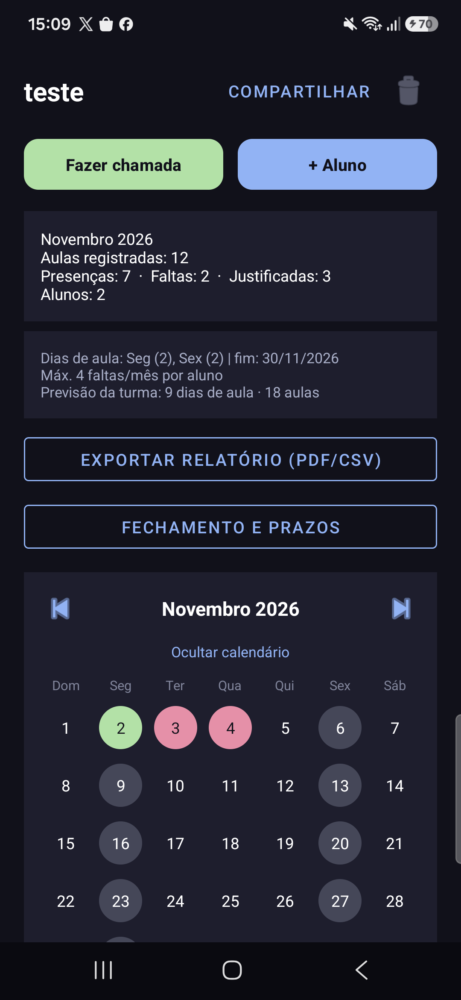
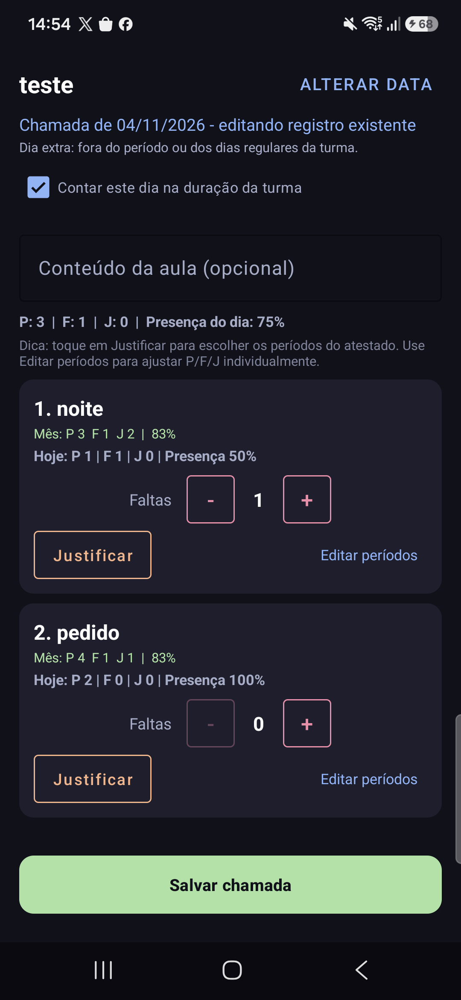

A chamada da sua turma,
sem complicação.
Faça a chamada em segundos, acompanhe o histórico de cada aluno mês a mês, compartilhe a turma com outro professor e gere o relatório final. Funciona mesmo sem internet.
Versão 1.1 · Gratuito · Pode ser instalado diretamente no celular
Tudo o que o professor precisa
Pensado para a rotina de sala de aula, do primeiro dia ao fim do curso.
Chamada rápida
O padrão é presença. Marque só as faltas com um toque, e justifique com atestado anexado à foto.
Histórico mensal
Cada aluno tem o histórico agrupado por mês, com a presença, as faltas e as justificativas de cada dia.
Compartilhe a turma
Convide outro professor por link. Você escolhe se ele pode fazer chamadas, adicionar alunos ou excluir registros.
Fechamento de mês
Feche o mês quando terminar. Dentro do prazo, ainda dá para corrigir. Depois, só com reabertura, registrada no histórico.
Relatórios em PDF e CSV
Relatório mensal e relatório final da turma, com as presenças de cada aluno e os atestados anexados.
Offline e sincronizado
Use sem internet. Quando a conexão volta, as informações são enviadas e sincronizadas com os outros aparelhos.
Veja como fica
Telas reais do aplicativo.


Como instalar no celular
Leva menos de dois minutos.
Baixe o APK
Toque em “Baixar APK” nesta página. O arquivo tem cerca de 19 MB.
Permita a instalação
Se o Android pedir, autorize a instalação de apps deste navegador (Configurações → Apps → Instalar apps desconhecidos).
Abra e entre
Entre com sua conta Google. Use o mesmo e-mail que você usa no Gmail.